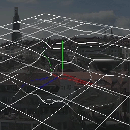
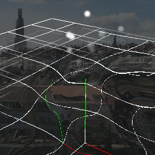

No13. 背景を歪ませよう！¶
概要¶
本章では、Effekseerで背景を歪ませる方法について説明します。 最近のゲームでは、背景を歪ませられるエフェクトが存在します。 Effekseerでもパラメーターを設定することで、エフェクトで背景を歪ませれます。
|

本章で作成するエフェクト1 |

本章で作成するエフェクト2 |
あらかじめ作成途中のエフェクトを下記のリンクからダウンロードできるようにしました。
使い方¶
背景を歪ませるためには、歪みのための画像が必要です。 画像には色情報ではなく、歪み方を描きます。
歪み用の画像はほとんど法線画像と同じです。ただ、青色だけ扱いが異なります。 赤色は左右方向の歪みの強さを表します。127を中心として、0は左方向、255は右方向に歪ませます。 緑色は上下方向の歪みの強さを表します。127を中心として、0は上方向、255は下方向に歪ませます。

歪み画像
effect1.efkprojを開いてください。
Texture/Distortion.pngを描画共通パネルから、予め用意されているDistortionノードの色画像に設定します。
描画共通パネルから歪みにチェックを入れて有効にします。 背景が黒いままだと、わかりにくいのでオプションパネルから背景画像を設定するとわかりやすくなります。
歪んだ背景

描画優先度¶
基本的に歪みは背景を歪ませるのみで、自身のエフェクトは歪ませられません。 しかし、自身のエフェクトを歪ませたくなる場合があります。 そのようなときは深度パネルから描画優先度を変更します。
描画優先度はノード間の描画の順番を決めます。普通は、ノードツリーで下のほうに配置されているノードほど、後に描画されますが、 描画優先度が異なる場合、描画優先度が大きいノードが後に描画されます。
この描画優先度が-1以下のノードは、描画優先度が0以上の歪みが設定されているノードに歪ませられます。
Particleノードの描画優先度を変更しましょう。 描画優先度を変更すると、ParticleノードのパーティクルがDistortionノードに歪まされていることがわかります。
|

描画優先度 : 0 |

描画優先度 : -1 |
使用例¶
歪みはリングやUVスクロールとも併用できます。 リングとUVスクロールを組み合わせると放射状の歪みを簡単に作成できます。
このエフェクトはリングとUVスクロールを組み合わせた例です。 パラメーターを調節したリングに左の画像を適用しました。 中央の画像が歪みなしで適用させた結果です。 右の映像がUVスクロールをしつつ歪みを使用したエフェクトです。 白いパーティクルも全方向に散らばるようにしました。

歪み画像 |

エフェクト(歪みなし) |
エフェクト |
まとめ¶
本章では、歪みについて説明しました。 上手く歪みを指定すると見栄えが良くなります。 ぜひ使ってみましょう。